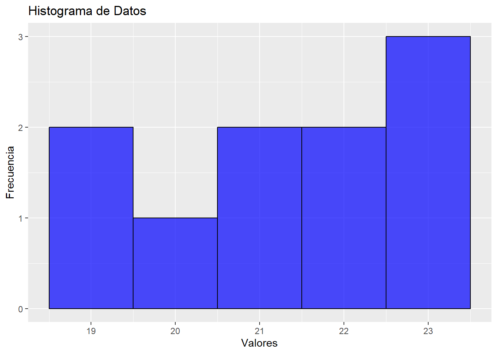
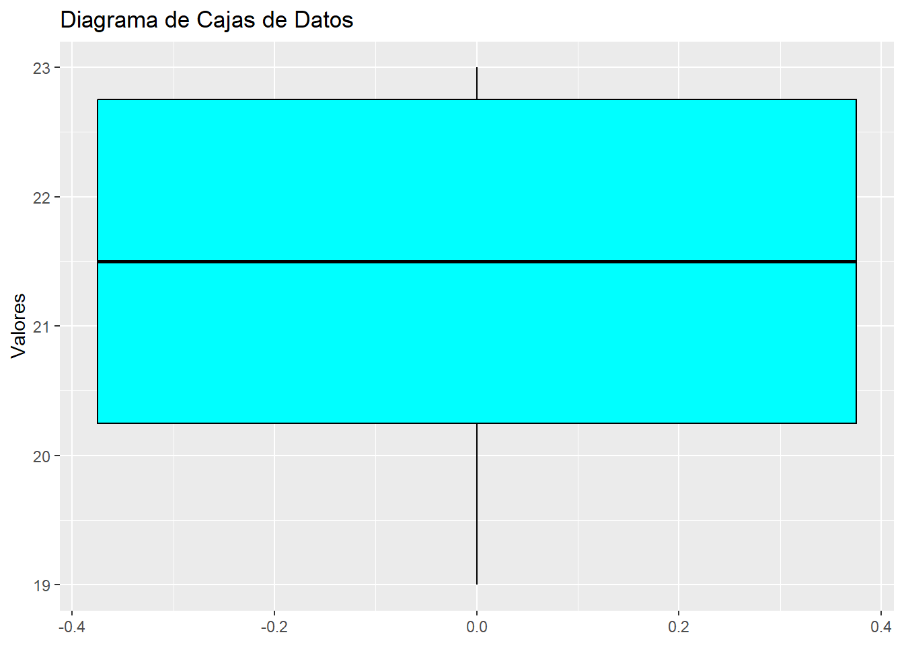
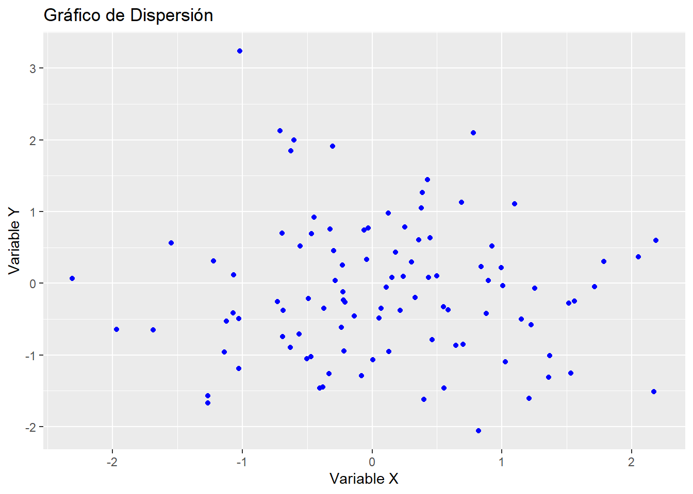

El estudio de la forma de los datos es fundamental en el análisis de datos y la estadística. Nos permite entender la distribución, tendencias, patrones y anomalías presentes en los datos, lo cual es esencial para tomar decisiones informadas y realizar análisis precisos. En esta introducción, exploraremos varios métodos y herramientas para examinar la forma de los datos, utilizando ejemplos en R, un lenguaje de programación muy utilizado en análisis de datos.
Análisis Descriptivo
El primer paso para entender la forma de los datos es realizar un análisis descriptivo. Este análisis incluye el cálculo de medidas como la media, mediana, moda, desviación estándar y percentiles, que resumen las características principales de los datos.
# Cargar libreríalibrary(dplyr)# Crear un conjunto de datosdatos <-c(23, 19, 23, 21, 22, 21, 20, 23, 22, 19)# Calcular medidas descriptivasmedia <-mean(datos)mediana <-median(datos)moda <-as.numeric(names(sort(table(datos), decreasing=TRUE)[1]))desviacion_estandar <-sd(datos)# Mostrar resultadoscat("Media:", media, "\n")
La visualización de datos es una herramienta poderosa para estudiar la forma de los datos. Gráficos como histogramas, diagramas de cajas y gráficos de dispersión permiten visualizar la distribución y las relaciones en los datos.
# Cargar libreríalibrary(ggplot2)# Crear un histogramaggplot(data.frame(datos), aes(x = datos)) +geom_histogram(binwidth =1, fill ="blue", alpha =0.7, color ="black") +labs(title ="Histograma de Datos", x ="Valores", y ="Frecuencia")

# Crear un diagrama de cajasggplot(data.frame(datos), aes(y = datos)) +geom_boxplot(fill ="cyan", color ="black") +labs(title ="Diagrama de Cajas de Datos", y ="Valores")

Análisis Exploratorio de Datos (EDA)
El Análisis Exploratorio de Datos (EDA) implica técnicas gráficas y cuantitativas para descubrir patrones, detectar anomalías y verificar hipótesis. EDA es una fase preliminar clave en el análisis de datos.
# Crear un conjunto de datos de ejemploset.seed(123)datos_eda <-data.frame(x =rnorm(100),y =rnorm(100))# Crear un gráfico de dispersiónggplot(datos_eda, aes(x = x, y = y)) +geom_point(color ="blue") +labs(title ="Gráfico de Dispersión", x ="Variable X", y ="Variable Y")

Pruebas Estadísticas
Las pruebas estadísticas, como la prueba de normalidad (Kolmogorov-Smirnov, Shapiro-Wilk), ayudan a determinar si los datos siguen una distribución específica.
# Prueba de normalidad Shapiro-Wilkshapiro_test <-shapiro.test(datos)# Mostrar resultadocat("Prueba de Shapiro-Wilk: p-value =", shapiro_test$p.value, "\n")
Prueba de Shapiro-Wilk: p-value = 0.1400044
Importancia del Estudio de la Forma de los Datos
Comprender la forma de los datos es crucial para identificar patrones, detectar anomalías, seleccionar modelos apropiados y visualizar datos de manera efectiva. Un buen entendimiento de la forma de los datos permite tomar decisiones más informadas y basadas en evidencia, mejorando la calidad del análisis y la interpretación de los resultados.
En resumen, el estudio de la forma de los datos a través del análisis descriptivo, visualización de datos, EDA y pruebas estadísticas, nos proporciona una comprensión profunda de los datos y nos guía en el proceso de análisis. Utilizar herramientas como R facilita este estudio y nos permite trabajar con datos de manera más eficiente y precisa.